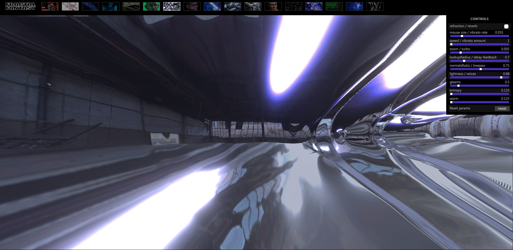

The webiste I chose is Liquid Entropy.

I have been explored this website, and answers for the research questions are as below.
Week 2
1. What was the first thing you paid attention to when interacting with the experience?
My eyes were immediately drawn to the molten metallic liquid when I opened the Liquid Entropy website, which Mika Chernov and Sinjin Hawke designed. The effects of the liquid changed depending on where the cursor was placed.
2. Spend two minutes with the experience and create a list of each of your discrete actions.
- The liquid effects have changed as a result of my mouse cursor movement. I gave it around ten seconds to see what would happen.
- The liquid ripples out from the middle of the mouse cursor while the mouse is motionless. I watched for around ten seconds to see what would happen.
- Every few seconds, the light will appear to highlight the liquid.
- I then spent the final 1.5 minutes adjusting the controls panel in the top right corner of the page to observe how the liquid effects would alter based on the controls' parameters.
3. What part of the experience did you spend the most time engaging with?
The controls panel was where I spent the majority of my time. For instance, as I moved the sliders on the controls to increase the mouse size/ vibrato rate, the ripples grew larger; conversely, as I decreased the mouse size, the ripples shrank.
4. What was the most common action in your two minute interaction with the experience?
In my two minute engagement, changing settings in the controls panel to experiment with various effects is the most frequent action.
5. What is your impression of the intended primary goal of the interactive experience?
The website visitors can interact with this type of melted liquid in various ways, such as changing its shapes or moving speed, which is what I believe the interactive experience's primary intended objective is.
6. What is your impression of how the interactive experience communicates its primary goal?
Users may easily move the cursors to activate the ripples of a liquid, and this computer generated image is trailing the cursors for various alterations. The control panels are placed in an obvious location on the webpage to invite visitors to test them out.
7. What is your impression of how the experience should be interacted with over time? (For how long and how many different times)
When they first open this website, I believe the majority of visitors will be shocked and amazed by this metallic liquid and longing to change the controls' parameters to see how and what this CGI will turn out. Yet after a few minutes of interacting with the liquid, they will start to lose interest because this website is only a display of their cutting-edge computer-generated image; it serves no amusing or practical purpose.
8. What is your impression of how the interactive experience communicates how it should be interacted with over time?
The website's interface is user-friendly; visitors can see the controls immediately and know how to interact with it.
Week 3
9. What other media forms (digital or otherwise) does the experience reference?
This Liquid Entropy has some similarities to the audio synthesiser. In order to manipulate the sound waves, users can alter various sliders and knobs on synthesisers. These adjustments can result in unpredictability and disorders that resemble this Liquid Entropy.
10. What does this reference or references suggest to you about how you should act when engaging with it?
While a synthesiser is a tool for manipulating sound waves, adjusting the sound settings over time is the best way to produce the sounds you have envisaged.
11. What does this reference or references suggest to you about how you should feel when engaging with it?
When interacting with it, we should be patient to experiment with various settings and parameters.
12. What is the most frustrating element of the interaction to you and what makes it frustrating?
After a time of adjusting the parameters, the visual and movement are finally enjoyable and as I had hoped, but I am unable to preserve it in any form, such as by exporting as a video. Also, I am unable to save those parameter settings on the website.
13. What is the most satisfying element of the interaction to you and what makes it satisfying?
The ability to manipulate the CGI using the controls to create truly unique images and movements is the most satisfying feature of this interactive experience.